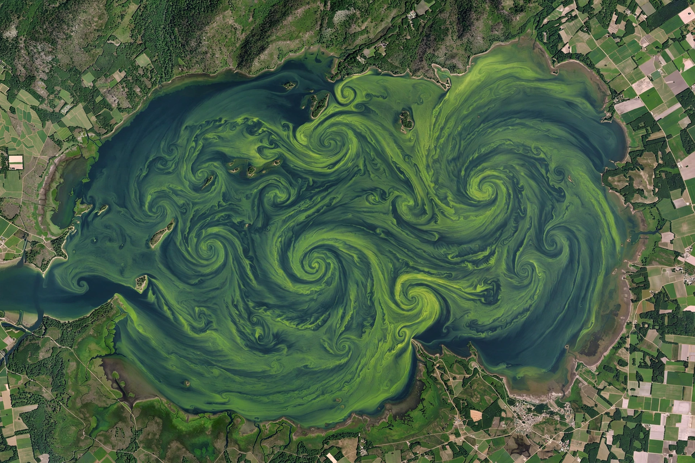

Water pollution

Water pollution is the contamination of rivers, lakes, aquifers and oceans by substances that degrade water quality and harm ecosystems and human health. It is a leading cause of disease in the developing world and of ecological decline everywhere. See also Pollution and Hydrology.
Sources divide into point sources (a factory outfall, a sewage overflow) and non-point sources (fertiliser washing off a million fields), the latter now usually the larger and harder problem.
Types and effects
Nutrient pollution from fertiliser and sewage feeds algal blooms and hypoxic 'dead zones' where oxygen-starved water can support little life; the Gulf of Mexico dead zone, fed by the Mississippi basin, is the famous example, and the same process drove lake eutrophication crises worldwide. Pathogens from untreated sewage cause cholera, typhoid and dysentery. Industrial pollutants include heavy metals (the mercury of Minamata disease), persistent organic chemicals such as PFAS 'forever chemicals', and plastics from pellets to microfibres.
Groundwater pollution is especially persistent: solvents, nitrate and arsenic can render aquifers unusable for generations, and remediation is slow and costly.
Control
Wastewater treatment, industrial discharge permits, buffer strips and precision fertilising, and bans on the worst chemicals have transformed many rivers since the 1970s — the Thames and the Rhine, once biologically moribund, again support fish. Yet globally a large share of wastewater is still discharged untreated, and new contaminant classes continue to emerge faster than regulation.
See also: Pollution · Ocean · Hydrology · Environmental protection · Plastic pollution